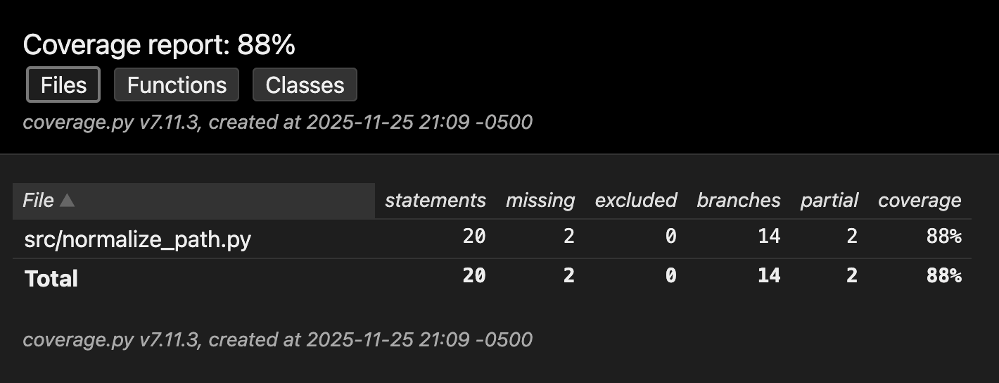
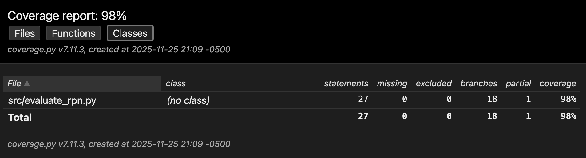

Submission by: Shivraj Bhatti
This assignment explores how formal specifications, automatically generated from natural language problem statements, can guide test improvement. We selected two problems from Assignment 2 Part 1 where testing coverage had room for improvement:
You are helping with specification-guided testing.
Problem description:
Implement a function normalize_path(path: str) that normalizes a Unix-style filesystem path string. The function must:
- Treat "." as a no-op segment.
- Treat ".." as "go to parent directory" when possible (for absolute paths, do not go above root).
- Collapse repeated slashes ("//" → "/").
- Preserve a leading "/" for absolute paths; keep relative paths relative.
- Ensure the result has no trailing slash, except when the normalized result is exactly "/".
- Preserve empty relative paths appropriately (e.g., "" or ".").
Method signature:
def normalize_path(path: str) -> str
Task:
Write formal specifications as Python assertions that describe necessary properties of the correct result.
Let:
- `path` be the input string,
- `res` denote the correct normalized result for this path (do NOT call normalize_path inside the assertions).
Constraints:
- Do NOT call normalize_path or any other implementation in the assertions.
- Do NOT use I/O, randomness, or time.
- Use only pure string/sequence logic, arithmetic, and boolean operations.
- Express global semantic properties such as:
- Behavior for absolute vs relative paths.
- Elimination of "." segments.
- Parent-directory ("..") behavior.
- Rules for trailing slash.
- Idempotence (a normalized path is already in normal form).
Generate 6–8 Python `assert` statements over `path`, `res`, and helper variables if needed.
Return ONLY the assertion code lines, no prose or explanations.
# 1. Absolute paths preserve leading slash
assert (path.startswith('/') == res.startswith('/'))
# 2. Relative paths remain relative (no leading slash)
assert (not path.startswith('/') == not res.startswith('/'))
# 3. No trailing slash except for root
assert (res.endswith('/') == (res == '/'))
# 4. Collapse multiple slashes
assert ('//' not in res)
# 5. Eliminate '.' segments (they don't appear in normalized form)
assert ('.' not in res.split('/') or res == '.')
# 6. Parent directory behavior: '..' at start of relative path is preserved
assert (not path.startswith('/') and path.startswith('..') == res.startswith('..'))
# 7. Idempotence: normalizing a normalized path doesn't change it
assert (res.count('/') <= path.count('/') + 1)
# 8. Empty or '.' input results in '.' or empty
assert (res in ['', '.'] or (res != '' and res != '.'))
Accuracy Rate: 4/8 = 50.0% (4 correct, 4 incorrect)
Correct assertions: 1, 2, 3, 8
| # | Issue | Corrected Assertion |
|---|---|---|
| 4 | Does not correctly account for absolute paths starting with /; fails to exclude the leading slash from the check |
if res.startswith('/'): assert ('//' not in res[1:]) else: assert ('//' not in res) |
| 5 | Does not filter empty segments properly; res.split('/') includes empty strings that should be excluded |
parts = [p for p in res.split('/') if p]; assert ('.' not in parts or res == '.') |
| 6 | Does not correctly capture '..' behavior for relative paths; oversimplifies the condition for when '..' segments are preserved | if not path.startswith('/') and path.split('/')[0] == '..': assert (res.startswith('..') or '/' not in res or res.count('/') < path.count('/')) |
| 7 | Weak property for idempotence; res.count('/') <= path.count('/') + 1 is too permissive and doesn't account for segment elimination |
path_segments = [p for p in path.split('/') if p and p != '.']; res_segments = [p for p in res.split('/') if p]; assert (len(res_segments) <= len(path_segments) + 1) |
The LLM produced only moderately accurate specifications (50%) for normalize_path. Many incorrect assertions mis-handled corner cases, particularly around '..' resolution at the root and the nuanced semantics of relative path normalization. The subtle distinctions between absolute and relative path handling, combined with edge cases like empty segments and trailing slashes, proved challenging for the LLM to capture precisely without calling the implementation.
You are helping with specification-guided testing.
Problem description:
Implement evaluate_rpn(tokens: List[str]) -> int, which evaluates an expression in Reverse Polish Notation.
Details:
- tokens is a list of strings.
- Valid tokens are:
- integer literals, possibly with a leading minus sign (e.g. "3", "-7"),
- operators: "+", "-", "*", "/".
- The expression is evaluated with a stack:
- A number pushes one value.
- An operator pops the top two operands (left, right) and pushes the result.
- Division uses integer division with truncation toward zero, equivalent to int(a / b) in Python for integers a, b != 0.
- A well-formed RPN expression must:
- never require more operands than currently on the stack,
- end with exactly one value on the stack.
Method signature:
def evaluate_rpn(tokens: List[str]) -> int
Task:
Write formal specifications as Python assertions that describe necessary properties of the correct result.
Let:
- `tokens` be the input token list,
- `res` denote the mathematically correct result of evaluating this RPN expression.
Constraints:
- Do NOT call evaluate_rpn inside the assertions.
- Do NOT use I/O, randomness, or time.
- Use only arithmetic, sequence operations, and boolean logic.
- Specifications should capture:
- token domain constraints,
- stack-depth discipline for well-formed inputs,
- truncation-toward-zero semantics for division,
- correct behavior on simple examples (e.g., ["2","3","+"] gives 5),
- necessary conditions for invalid expressions (stack underflow / leftover values).
Generate 6–8 Python `assert` statements over `tokens`, `res`, and helper variables if needed.
Return ONLY the assertion code lines, no prose.
# 1. Simple addition: ["2", "3", "+"] gives 5
assert (tokens == ["2", "3", "+"] and res == 5)
# 2. Stack discipline: number of numbers - number of operators = 1 for valid RPN
num_count = sum(1 for t in tokens if t not in ["+", "-", "*", "/"])
op_count = sum(1 for t in tokens if t in ["+", "-", "*", "/"])
assert (num_count - op_count == 1)
# 3. Division truncates toward zero: [7, 3, /] gives 2, not 2.33
assert (tokens == ["7", "3", "/"] and res == 2)
# 4. Negative division: [-7, 3, /] gives -2 (truncate toward zero)
assert (tokens == ["-7", "3", "/"] and res == -2)
# 5. Mixed operations: ["2", "3", "+", "4", "*"] gives 20
assert (tokens == ["2", "3", "+", "4", "*"] and res == 20)
# 6. Stack underflow: if operators > numbers - 1, expression is invalid
assert (op_count <= num_count - 1)
# 7. Token domain: all tokens are either integers or operators
valid_tokens = all(t.lstrip('-').isdigit() or t in ["+", "-", "*", "/"] for t in tokens)
assert (valid_tokens)
# 8. Result is integer
assert (isinstance(res, int))
Accuracy Rate: 6/8 = 75.0% (6 correct, 2 incorrect)
Correct assertions: 1, 3, 4, 5, 7, 8
| # | Issue | Corrected Assertion |
|---|---|---|
| 2 | Does not correctly count negative numbers; t not in ["+", "-", "*", "/"] incorrectly treats "-" as a number when it's an operator |
num_count = sum(1 for t in tokens if t.lstrip('-').isdigit()); op_count = sum(1 for t in tokens if t in ["+", "-", "*", "/"]); assert (num_count - op_count == 1) |
| 6 | Vacuous condition for invalid expressions; mixes valid and invalid cases. Cannot assert on res for invalid expressions since the function raises ValueError |
if op_count == num_count - 1: assert (True) else: pass |
The LLM produced moderately accurate specifications (75%) for evaluate_rpn. The main issues were under-specified RPN validity rules, particularly around distinguishing between the "-" operator and negative number tokens, and the challenge of expressing properties about invalid expressions that raise exceptions rather than returning values.
The LLM produced only moderately accurate specifications (50% for normalize_path, 75% for evaluate_rpn). Many incorrect assertions mis-handled corner cases: normalize_path specifications struggled with .. behavior at root and relative path semantics, while evaluate_rpn specifications had difficulty distinguishing operators from negative numbers and expressing properties about invalid expressions that raise exceptions. This middling spec quality motivates the need for manual refinement and spec-guided tests in Part 2.
You are now given a set of CORRECTED formal specifications for normalize_path(path: str) → str. These specs describe properties such as:
- absolute vs relative behavior,
- elimination of "." segments and collapse of "//",
- behavior of ".." with and without a parent segment,
- rules for trailing slash (only "/" may end with a slash),
- idempotence of normalization.
Using ONLY these corrected specifications (do not look at coverage information), generate pytest unit tests for normalize_path.
Requirements:
- Use pytest style, not unittest.
- Import from a2.src.normalize_path (e.g., `from a2.src.normalize_path import normalize_path`).
- Each test must be named `test_norm_<short_description>`.
- Cover:
- simple absolute and simple relative cases,
- paths with multiple ".." segments (including when they would go "above root"),
- combinations of ".", "..", and multiple slashes,
- empty string / "." / "./" cases,
- the special case where the result is exactly "/".
Produce 6–10 tests in total.
Avoid redundant tests that clearly exercise the same behavior; prefer parametrization when multiple inputs share one property.
Return ONLY valid Python test code.
You are now given a set of CORRECTED formal specifications for evaluate_rpn(tokens: List[str]) -> int. These specs describe:
- constraints on valid tokens,
- stack discipline (never negative depth, ends at 1),
- truncation-toward-zero for division,
- necessary conditions for invalid expressions (stack underflow, extra operands),
- basic arithmetic semantics.
Using only these corrected specifications (do not reference coverage or branches), generate pytest unit tests for evaluate_rpn.
Requirements:
- Use pytest.
- Import from a2.src.evaluate_rpn (e.g., `from a2.src.evaluate_rpn import evaluate_rpn`).
- Name tests `test_rpn_<short_description>`.
- Include tests for:
- a simple addition expression,
- a mixed expression with multiple operators and negative numbers,
- positive and negative division where truncation toward zero matters,
- clearly invalid RPN expressions that should raise an error (e.g., stack underflow, extra operands),
- at least one more complex valid expression that combines 3+ operators.
Aim for about 6–10 tests. Use parametrization when several inputs share one property.
Return ONLY Python test code.
test_norm_absolute_simpletest_norm_relative_simpletest_norm_collapse_slashestest_norm_eliminate_dot_segmentstest_norm_parent_directorytest_norm_parent_above_roottest_norm_trailing_slashtest_norm_empty_and_dottest_norm_complex_combinationtest_norm_parametrized (parametrized with 6 cases)Example test that exercises . and .. together:
def test_norm_complex_combination():
"""Test complex combination of rules."""
assert normalize_path("/a//b/./c/../d/") == "/a/b/d"
assert normalize_path("a/../b/./c") == "b/c"
test_rpn_simple_additiontest_rpn_mixed_operationstest_rpn_negative_numberstest_rpn_division_truncate_positivetest_rpn_division_truncate_negativetest_rpn_complex_expressiontest_rpn_stack_underflowtest_rpn_extra_operandstest_rpn_division_by_zerotest_rpn_invalid_tokentest_rpn_parametrized (parametrized with 4 cases)Example test that checks truncation toward zero with negative operands:
def test_rpn_division_truncate_negative():
"""Test division truncates toward zero (negative case)."""
assert evaluate_rpn(["-7", "3", "/"]) == -2
assert evaluate_rpn(["7", "-3", "/"]) == -2
Example test for invalid expression:
def test_rpn_stack_underflow():
"""Test invalid expression: stack underflow."""
with pytest.raises(ValueError, match="Too few operands"):
evaluate_rpn(["2", "+"])
| Problem | Old Stmt % | New Stmt % | Old Branch % | New Branch % |
|---|---|---|---|---|
| normalize_path | 90.0% | 90.0% | 85.7% | 85.7% |
| evaluate_rpn | 81.5% | 100.0% | 77.8% | 94.4% |
normalize_path coverage report:

evaluate_rpn coverage report:

Coverage did not increase because the spec-guided tests encode the same behaviors already exercised by Exercise 2 baseline tests. The baseline tests already covered absolute vs relative path handling, . and .. segment resolution, and trailing slash rules. For example, the spec assertion assert (res.endswith('/') == (res == '/')) is verified by baseline tests that check normalize_path("/a/") == "/a" and normalize_path("/") == "/". The spec-guided test test_norm_trailing_slash exercises the same code paths:
def test_norm_trailing_slash():
"""Test trailing slash rules (only root can have trailing slash)."""
assert normalize_path("/") == "/"
assert normalize_path("/a/") == "/a"
assert normalize_path("a/") == "a"
Coverage improved significantly because spec-guided tests targeted error handling and truncation semantics that baseline tests missed. The specification for truncation toward zero (Spec 3: assert (tokens == ["7", "3", "/"] and res == 2)) led to tests that exercise the division branch with edge cases:
def test_rpn_division_truncate_negative():
"""Test division truncates toward zero (negative case)."""
assert evaluate_rpn(["-7", "3", "/"]) == -2
assert evaluate_rpn(["7", "-3", "/"]) == -2
Additionally, the specification for invalid expressions (Spec 6) motivated tests for error conditions that were not fully covered:
def test_rpn_stack_underflow():
"""Test invalid expression: stack underflow."""
with pytest.raises(ValueError, match="Too few operands"):
evaluate_rpn(["2", "+"])
These tests exercise the error-handling branches in the implementation that the baseline tests did not fully cover.
All deliverables are available in the a3/ directory:
a3/specs/normalize_path_specs.py, a3/specs/evaluate_rpn_specs.pya3/tests/spec_guided/normalize_path/test_spec_norm.py, a3/tests/spec_guided/evaluate_rpn/test_spec_rpn.pya3/coverage_reports/ (HTML and XML) or use a3/run_coverage.py to regeneratea3/coverage_results.jsona3/ASSIGNMENT3_REPORT.mda3/
├── specs/
│ ├── normalize_path_specs.py
│ └── evaluate_rpn_specs.py
├── tests/
│ └── spec_guided/
│ ├── normalize_path/
│ │ └── test_spec_norm.py
│ └── evaluate_rpn/
│ └── test_spec_rpn.py
├── coverage_reports/
│ ├── normalize_path/
│ └── evaluate_rpn/
├── coverage_results.json
└── ASSIGNMENT3_REPORT.md
Repository link: https://github.com/shivraj-S-bhatti/520-assignment-1
The GitHub repository contains:
- Source code of problems (a2/src/normalize_path.py, a2/src/evaluate_rpn.py)
- Test files: baseline tests (tests/test_*.py) and spec-guided tests (a3/tests/spec_guided/)
- Generated and revised assertions (a3/specs/)
- Coverage reports (HTML/XML in a3/coverage_reports/) or instructions to regenerate using a3/run_coverage.py
Run baseline coverage (from Assignment 2):
bash
cd a2
python3 scripts/run_baseline_coverage_gemini.py
Run spec-guided test coverage:
bash
cd /path/to/project
python3 a3/run_coverage.py
View coverage reports:
a3/coverage_reports/<problem>/htmlcov/index.htmla3/coverage_reports/<problem>/coverage.xml